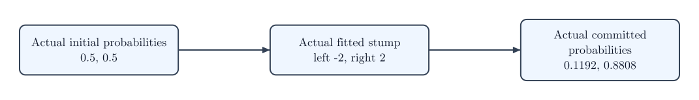
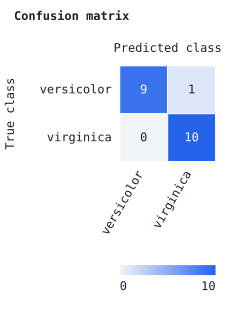
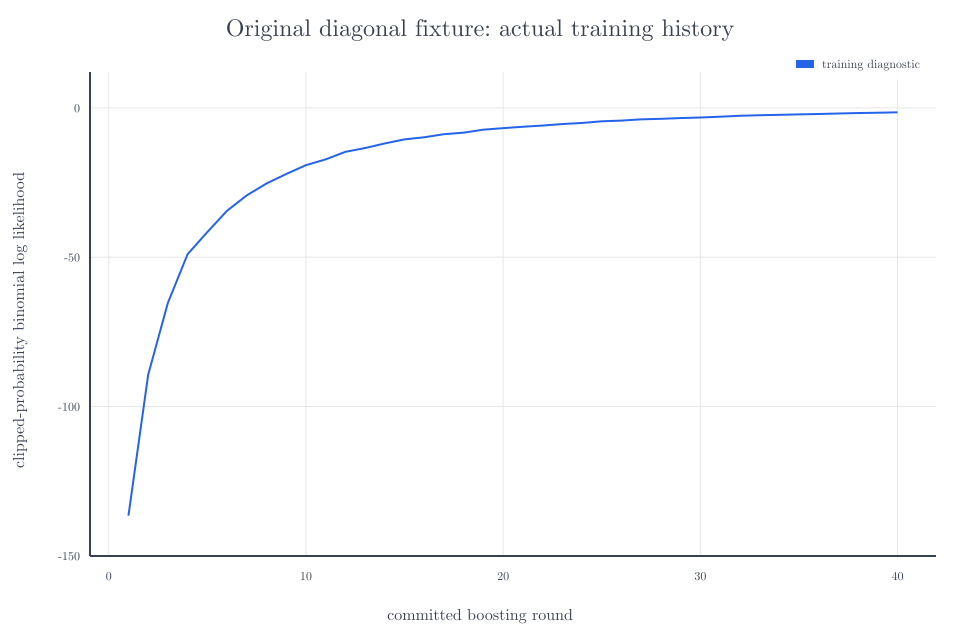
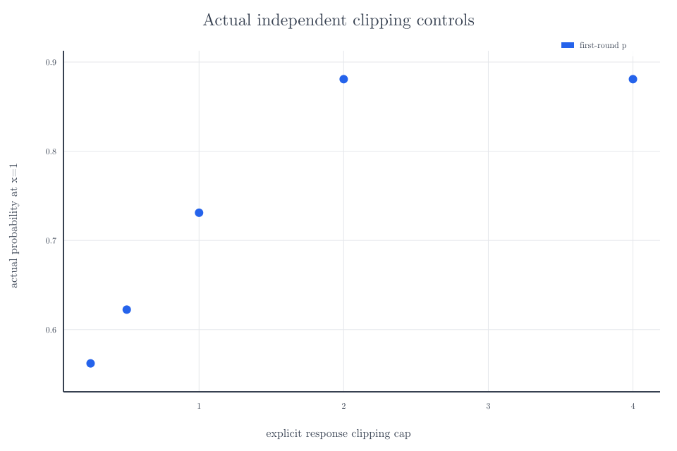
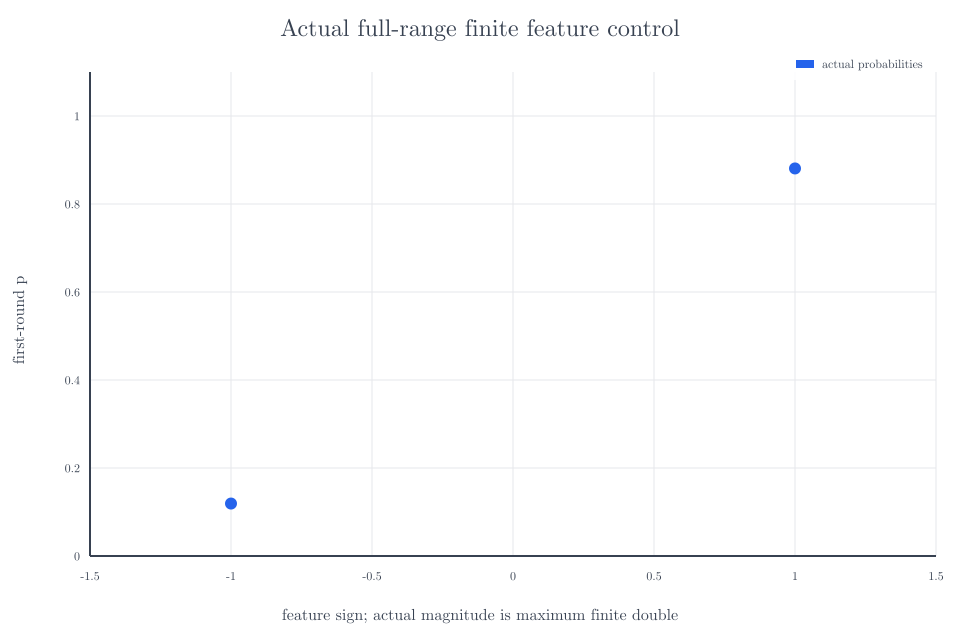

LogitBoost with regression stumps
Abstract
LogitBoost builds an additive logistic predictor through weighted regression fits. This report retains the original 300-candidate diagonal fixture and 40 rounds, exposes actual producing Newton states, and separates training likelihood and accuracy from held-out performance or probability calibration.
Producing Newton updates
For binary labels, p=1/(1+exp(-2F)), w=max(p*(1-p),1e-12), and z=clip((y-p)/w, -max_response, max_response). Each round chooses the minimum weighted squared-error regression stump in the actual finite candidate set and commits F←F+0.5*f. Ties keep the earliest feature/threshold. Empty sides predict zero. This is the implemented floored/clipped Newton procedure, not an unrestricted exact Newton optimizer.
The tiny two-point example begins with weights0.25 and responses−2,+2. A threshold between the points fits those responses exactly; its first committed scores are−1,+1. The diagram and table use the real captured round.
#include <dm/dm.hpp>
int main() {
std::filesystem::create_directories("build");
auto t = dm::algorithms::logitboost_trace({{-1}, {1}}, {0, 1}, 1);
auto &r = t.rounds.front();
std::print("| row | actual weight | actual response | committed probability |\n| ---: | ---: | ---: | " "---: |\n");
for (int i = 0; i < 2; ++i)
std::print("| {} | {} | {} | {} |\n", i, r.weights[i], r.responses[i],
r.probabilities[i]);
dm::graphics::Diagram d;
d.node("inputs", {0, 0}, "Actual initial probabilities\n0.5, 0.5").node(
"fit", {6, 0},
std::format("Actual fitted stump\nleft {}, right {}",
r.stump.left_value, r.stump.right_value)).node(
"output", {12, 0},
std::format("Actual committed probabilities\n{:.4f}, {:.4f}",
r.probabilities[0], r.probabilities[1])).edge("inputs",
"fit").edge(
"fit", "output");
d.save_svg("build/logitboost_tiny.svg");
}| row | actual weight | actual response | committed probability |
|---|---|---|---|
| 0 | 0.25 | -2 | 0.11920292202211755 |
| 1 | 0.25 | 2 | 0.8807970779778823 |

Separate held-out Iris application
A binary classification use on real data fits naturally here. The native Iris dataset supplies versicolor and virginica, labelled0 and1, with Petal.Length and Petal.Width as the only predictors. Every fifth row within each species is held out before fitting:80 training rows and20 test rows. Forty rounds and the default response cap are fixed in advance, with no test-based tuning. This deterministic illustrative split is small and is not cross-validation. Its test accuracy assesses classification on these particular unseen rows, not calibration.
The native study helper owns the partition, fits only training rows and returns actual held-out predictions. The annotated confusion matrix uses true-class rows and predicted-class columns.
#include <dm/dm.hpp>
int main() {
std::filesystem::create_directories("build");
auto s = dm::algorithms::logitboost_iris_study();
dm::nn::ConfusionMatrix cm(2);
std::print("Actual training rows {}; actual held-out rows {}; fixed rounds {}.\n\n| held-out row | " "petal length | petal width | true class | actual prediction | actual probability |\n| ---: " "| ---: | ---: | ---: | ---: | ---: |\n",
s.training.labels.size(), s.testing.labels.size(),
s.model.stumps.size());
for (std::size_t i = 0; i < s.testing.labels.size(); ++i) {
cm.add(s.testing.labels[i], s.predictions[i]);
std::print("| {} | {} | {} | {} | {} | {} |\n", i,
s.testing.features[i][0], s.testing.features[i][1],
s.testing.labels[i], s.predictions[i], s.probabilities[i]);
}
std::print("\nActual held-out accuracy {}.\n", cm.accuracy());
cm.save_svg("build/logitboost_iris.svg",
{.labels = {"versicolor", "virginica"}});
}Actual training rows 80; actual held-out rows 20; fixed rounds 40.
| held-out row | petal length | petal width | true class | actual prediction | actual probability |
|---|---|---|---|---|---|
| 0 | 4.7 | 1.4 | 0 | 0 | 0.0001155010553464598 |
| 1 | 4.5 | 1.3 | 0 | 0 | 0.0001155010553464598 |
| 2 | 3.5 | 1 | 0 | 0 | 0.0001155010553464598 |
| 3 | 4.4 | 1.4 | 0 | 0 | 0.0001155010553464598 |
| 4 | 4.8 | 1.8 | 0 | 1 | 0.9981667562319405 |
| 5 | 4.4 | 1.4 | 0 | 0 | 0.0001155010553464598 |
| 6 | 3.8 | 1.1 | 0 | 0 | 0.0001155010553464598 |
| 7 | 4.5 | 1.6 | 0 | 0 | 6.996727140980948e-08 |
| 8 | 4.4 | 1.2 | 0 | 0 | 0.0001155010553464598 |
| 9 | 4.2 | 1.2 | 0 | 0 | 0.0001155010553464598 |
| 10 | 6 | 2.5 | 1 | 1 | 0.9999999999503615 |
| 11 | 6.6 | 2.1 | 1 | 1 | 0.9999999999503615 |
| 12 | 5.1 | 2 | 1 | 1 | 0.9999997899016768 |
| 13 | 5.3 | 2.3 | 1 | 1 | 0.9999999999503615 |
| 14 | 5.7 | 2.3 | 1 | 1 | 0.9999999999503615 |
| 15 | 6 | 1.8 | 1 | 1 | 0.9999999999503615 |
| 16 | 6.1 | 1.9 | 1 | 1 | 0.9999999999503615 |
| 17 | 6.1 | 2.3 | 1 | 1 | 0.9999999999503615 |
| 18 | 5.6 | 2.4 | 1 | 1 | 0.9999999999503615 |
| 19 | 5.2 | 2.3 | 1 | 1 | 0.9999999999503615 |
Actual held-out accuracy 0.95.

Original diagonal classification fixture
Retain mt19937_64 seed3, 300 candidate pairs sampled x then y uniformly on[-3,3], and discard pairs with abs(x+y)<0.3. Labels are1 when x+y>0. These are training observations, not an independent test set. The table retains the original five probability queries. A number near zero or one is a model probability, not evidence that probabilities are calibrated.
The implementation sorts each feature but scans all n observations twice for every candidate threshold. With at most n thresholds per feature, each round costs O(d*n*n+d*n*log(n)), rather than the earlier report’s O(n*d) claim. Ordinary fitting stores O(n+T) working/model data, excluding the input; prediction sums T stumps. Public single-stump prediction validates the supplied query, so the checked probability wrapper currently incurs O(T*d) validation as well.
#include <dm/dm.hpp>
int main() {
std::filesystem::create_directories("build");
const auto data = dm::algorithms::logitboost_diagonal_data();
const auto &x = data.features;
const auto &y = data.labels;
auto m = dm::algorithms::logitboost_train(x, y, 40);
std::size_t correct = 0;
for (std::size_t i = 0; i < x.size(); ++i)
correct += dm::algorithms::logitboost_predict(m, x[i]) == y[i];
std::print("Actual retained training rows {}; fitted rounds {}; training accuracy {}.\n\n| query x | " "query y | actual model probability |\n| ---: | ---: | ---: |\n",
x.size(), m.stumps.size(), double(correct) / x.size());
for (auto q : std::vector<std::vector<double>>{{3, 3}, {1, .5}, {0, .1},
{-1, -.5}, {-3, -3}})
std::print("| {} | {} | {} |\n", q[0], q[1],
dm::algorithms::logitboost_probability(m, q));
std::vector<double> a, b;
for (std::size_t i = 0; i < m.log_likelihood.size(); ++i) {
a.push_back(i + 1);
b.push_back(m.log_likelihood[i]);
}
auto p = dm::graphics::RPlot::create();
p.line(a, b, "training diagnostic", {37, 99, 235}, 2).title(
"Original diagonal fixture: actual training history").x_label(
"committed boosting round").y_label("clipped-probability binomial log likelihood").save_svg("build/logitboost_original.svg");
}Actual retained training rows 271; fitted rounds 40; training accuracy 1.
| query x | query y | actual model probability |
|---|---|---|
| 3 | 3 | 0.9999999999058973 |
| 1 | 0.5 | 0.9987654876431878 |
| 0 | 0.1 | 0.8418591533374832 |
| -1 | -0.5 | 0.0004003893396228012 |
| -3 | -3 | 3.045014434201637e-12 |

Complete round state and clipping controls
Each trace entry stores the actual clipped responses, floored weights, chosen stump, committed probabilities and likelihood. It is emitted during the same fit used by the ordinary API. The likelihood uses probabilities clipped to[1e-12,1−1e-12] before logs, so it is explicitly a clipped training diagnostic. The table compares independent clipping settings on the same tiny input; it does not reconstruct an earlier trajectory.
#include <dm/dm.hpp>
int main() {
std::filesystem::create_directories("build");
std::vector<double> x, y;
std::print("| response cap | actual first left response | actual first right response | first committed " "positive probability |\n| ---: | ---: | ---: | ---: |\n");
for (double cap : {.25, .5, 1., 2., 4.}) {
auto t = dm::algorithms::logitboost_trace({{-1}, {1}}, {0, 1}, 1, cap);
auto &r = t.rounds.front();
std::print("| {} | {} | {} | {} |\n", cap, r.responses[0],
r.responses[1], r.probabilities[1]);
x.push_back(cap);
y.push_back(r.probabilities[1]);
}
auto p = dm::graphics::RPlot::create();
p.points(x, y, "first-round p", {37, 99, 235}, 6).x_label(
"explicit response clipping cap").y_label("actual probability at x=1").title("Actual independent clipping controls").save_svg("build/logitboost_clipping.svg");
}| response cap | actual first left response | actual first right response | first committed positive probability |
|---|---|---|---|
| 0.25 | -0.25 | 0.25 | 0.5621765008857981 |
| 0.5 | -0.5 | 0.5 | 0.6224593312018546 |
| 1 | -1 | 1 | 0.7310585786300049 |
| 2 | -2 | 2 | 0.8807970779778823 |
| 4 | -2 | 2 | 0.8807970779778823 |

Finite thresholds and checked contracts
Complete training matrices must be finite, rectangular and have positive dimension unless empty; labels must be binary and clipping positive finite even for zero rounds. Original thresholds and finite midpoint arithmetic are retained where valid. If a midpoint overflows, std::midpoint supplies a finite alternative; if rounding reaches the upper knot, the lower knot preserves the intended <= split. A finite threshold below the minimum is used when representable. At the most negative finite value there is no smaller finite threshold, so the equivalent constant prediction candidate uses the maximum knot instead. Nonfinite weighted fits or accumulated scores throw rather than silently returning a default stump.
Native tests verify analytic Newton values, actual chosen stumps and committed
probabilities, clipping, complete finite input guards, extreme thresholds,
capture admission, the original fixture and held-out Iris predictions. The
ten-report batch passed 101 native CTest cases, 34 directly instrumented
ASan/UBSan cases, 103 compiled/executed public examples, 515/515 scoped file
definitions plus 10 exact LCG class definitions, and ten representative clangd
hovers. Independent Python integer/Fraction, explicit-label graph search,
quadratic sequence DP and full weighted-stump references passed 69430 records
across all ten topics, including a separately fitted held-out Iris model. Frozen
ordinary compatibility passed 1000 Lex-BFS orders, 1000 library sorts, 100 LBG
codebooks, 100 complete five-round LogitBoost ensembles and 200 LLL bases;
corrected LBG final labels/objectives are intentionally excluded from historical
compatibility. All 5 complete programs executed and all 5 native figures were
rendered and visually reviewed, with clipped legends corrected and rerun.
HTML/Markdown computed-result and figure-byte checks gate legacy retirement.
Repeatable receipts are retained in build/mepml-conversion/batch-204-213/.
#include <dm/dm.hpp>
int main() {
std::filesystem::create_directories("build");
double m = std::numeric_limits<double>::max();
auto t = dm::algorithms::logitboost_trace({{-m}, {m}}, {0, 1}, 1);
auto &r = t.rounds.front();
std::print("Actual extreme-input threshold {}; finite {}; predictions {}, {}.\n",
r.stump.threshold, std::isfinite(r.stump.threshold),
dm::algorithms::logitboost_predict(t.model, {-m}),
dm::algorithms::logitboost_predict(t.model, {m}));
auto p = dm::graphics::RPlot::create();
p.points({-1, 1}, r.probabilities, "actual probabilities", {37, 99, 235}, 6).x_limits(-1.5, 1.5).y_limits(0, 1.1).title("Actual full-range finite feature control").x_label("feature sign; actual magnitude is maximum finite double").y_label("first-round p").save_svg("build/logitboost_finite.svg");
}Actual extreme-input threshold 0; finite true; predictions 0, 1.

References
J. Friedman, T. Hastie and R. Tibshirani(2000), Additive Logistic Regression: a Statistical View of Boosting, Annals of Statistics28(2),337–407. Its statistical motivation does not make training accuracy into a validation estimate or establish calibration for this particular clipped stump ensemble.